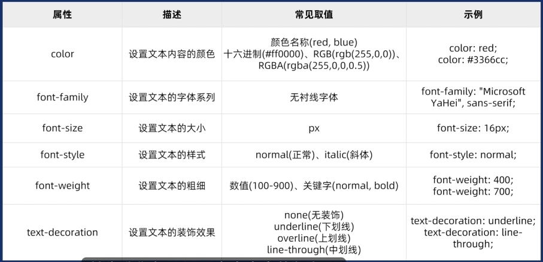

注意： 文字样式不能直接修改 修改文字样式是通过css修改标签来进行修改
| 字体样式 | 说明 |
|---|---|
| color | 字体颜色 |
| font-family | 字体族 |
| font-size | 字体大小 |
| font-style | 字体风格 |
| font-width | 字体粗细 |
| text-decoration | 字体装饰 |

color属性：
关键字 如rad green等
十六进制 （开发中常用）如 #FF0000
rgb 如 rgb(255,0,0)
rgb特殊：如 rgb(255,0,0,0.4) 的0.4是表示文字透明度
同时：backgrond 也可以设置半透明rgb颜色和其他
用于设置字体 楷体 黑体 等等
有先后顺序 例如 font-family:"Arial,Helvetica"用逗号隔开 浏览器 根据第一个有安装字体的显示 默认是微软雅黑
一般字体族属性给body标签
一般网页用无衬线字体
用于设置字体大小
单位 px 像素 绝对单位
不同浏览器默认字体大小不一样 一般直接用body选择器指定所有字体大小统一
用于设置字体风格 打开或者关闭 斜体（italic）
属性有 normal 普通文字 italic 斜体
开发中一般用于让em i等标签取消倾斜
用于修改字体粗体
常用于 给标题标签 取消加粗
常用于 大量的文字 批量的取消粗体
属性值有 normol 普通文字不加粗 bold 加粗
属性值也可以用数字 400是正常文字 700加粗文字
用于修改字体装饰
可以设置字体上的文本装饰
常用于：删除连接的下划线a标签
常用于：批量添加删除线
关键字 color:blue;
十六进制 color:#FF0000;
rgb color: rgb(0, 255, 0);
font-family: 宋体; 设置字体为宋体
font-size: 25px; 设置字体大小为25像素
font-style: italic; 设置文字为斜体
font-weight: bold; 设置文字加粗
正常的文字
下划线文字
上划线文字
贯穿文字的线 / 删除线